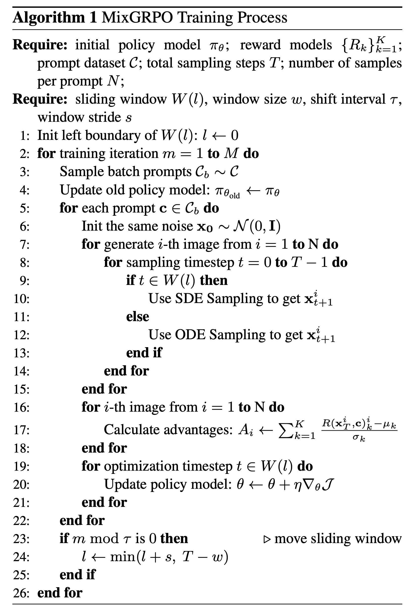

Hi, I'm
Senior Student @ Tianjin University · LLM & Diffusion Models Researcher
I am a senior undergraduate student at Tianjin University, supervised by Prof. Bing Cao. My research interests lie in Large Language Models (LLM), Multimodal LLMs (MLLM), and Diffusion Models. During my research internship at Tencent Hunyuan, I am working on generative models.
I am currently a senior undergraduate student majoring in Computer Science at Tianjin University, under the supervision of Prof. Bing Cao. My research primarily focuses on generative AI, particularly in text-to-image and text-to-video generation.
In 2023–2024, I was a member of the Tianjin University Competitive Programming Team, where I actively participated in various programming contests. I am honored to have won a Silver Medal in the ICPC EC Final, which was a significant milestone in my competitive programming journey.
Previously, I interned at Tencent Hunyuan, where I researched RLHF (Reinforcement Learning from Human Feedback) for generative models and evaluated video generation models. My recent project, MixGRPO, explores unlocking efficiency in flow-based GRPO training via mixed ODE-SDE strategies.
Research Interests:
Tianjin University (天津大学)
Tianjin University (天津大学)
Supervisor: Prof. Bing Cao
Research focus: Multimodal LLM, Generative Models
DiffCap-Bench: A Comprehensive, Challenging, Robust Benchmark for Image Difference Captioning
Yuancheng Wei, Haojie Zhang, ... Tao Huang, ... · arXiv preprint, 2026
MixGRPO: Unlocking Flow-based GRPO Efficiency with Mixed ODE-SDE
Junzhe Li, Yutao Cui, Tao Huang et al. · arXiv preprint, 2025
Research Intern at Tencent Hunyuan
Working on flow-based generative models.
Feel free to reach out for collaborations, questions, or just a chat!
arXiv preprint · 2025
Abstract
Although GRPO substantially enhances flow matching models in human preference alignment of image generation, methods such as FlowGRPO and DanceGRPO still exhibit inefficiency due to the necessity of sampling and optimizing over all denoising steps specified by the Markov Decision Process (MDP). In this paper, we propose MixGRPO, a novel framework that leverages the flexibility of mixed sampling strategies through the integration of stochastic differential equations (SDE) and ordinary differential equations (ODE). This streamlines the optimization process within the MDP to improve efficiency and boost performance. Specifically, MixGRPO introduces a sliding window mechanism, using SDE sampling and GRPO-guided optimization only within the window, while applying ODE sampling outside. This design confines sampling randomness to the time-steps within the window, thereby reducing the optimization overhead, and allowing for more focused gradient updates to accelerate convergence. Additionally, as time-steps beyond the sliding window are not involved in optimization, higher-order solvers are supported for faster sampling. So we present a faster variant, termed MixGRPO-Flash, which further improves training efficiency while achieving comparable performance. MixGRPO exhibits substantial gains across multiple dimensions of human preference alignment, outperforming DanceGRPO in both effectiveness and efficiency, with nearly 50% lower training time. Notably, MixGRPO-Flash further reduces training time by 71%.

arXiv preprint · 2026
Abstract
Image Difference Captioning (IDC) generates natural language descriptions that precisely identify differences between two images, serving as a key benchmark for fine-grained change perception, cross-modal reasoning, and image editing data construction. However, existing benchmarks lack diversity and compositional complexity, and standard lexical-overlap metrics (e.g., BLEU, METEOR) fail to capture semantic consistency or penalize hallucinations, which together prevent a comprehensive and robust evaluation of multimodal large language models (MLLMs) on IDC. To address these gaps, we introduce DiffCap-Bench, a comprehensive IDC benchmark covering ten distinct difference categories to ensure diversity and compositional complexity. Furthermore, we propose an LLM-as-a-Judge evaluation protocol grounded in human-validated Difference Lists, enabling a robust assessment of models' ability to both capture and describe visual changes. Through extensive evaluation of state-of-the-art MLLMs, we reveal significant performance gaps between proprietary and open-source models, highlight the critical importance of reasoning capability, and identify clear limitations in model scaling. Our framework also demonstrates strong alignment with human expert judgments and strong correlation with downstream image editing data construction quality. These findings establish DiffCap-Bench as both a reliable IDC evaluation framework and a practical predictor of downstream utility. The benchmark and code will be made publicly available to support further research.
2025.04 – 2026.04
Experience
Working on flow-based generative models at Tencent Hunyuan.
I had a wonderful and unforgettable internship experience at Tencent Hunyuan, where I met many friendly and helpful colleagues and learned a lot from them.